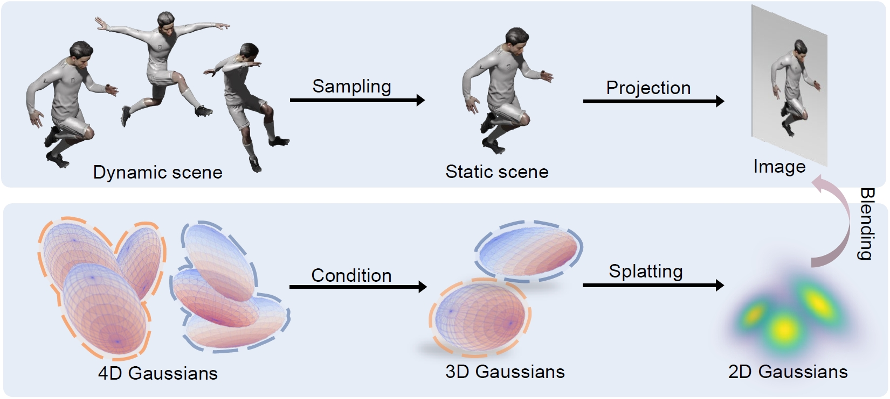
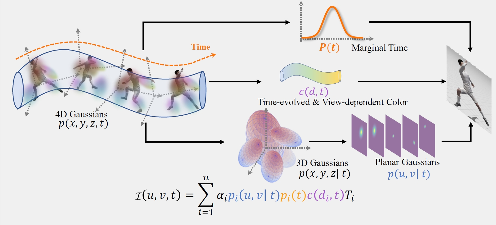

Qualitative novel-view synthesis results
4D Gaussian Splatting outperforms previous arts in both visual quality and efficiency.

4D Gaussian Splatting achieves real-time high-fidelity video synthesis by optimizing a collection of 4D primitives to fit the underlying spatio-temporal 4D volume of dynamic scenes.
(a) Indoor scene with intricate dynamics and illuminations
(b) Novel view synthesis from monocular dynamic videos
(c) Reconstruction on the Urban scene
Reconstructing dynamic 3D scenes from 2D images and generating diverse views over time is challenging due to scene complexity and temporal dynamics. Despite advancements in neural implicit models, limitations persist: (i) Inadequate Scene Structure: Existing methods struggle to reveal the spatial and temporal structure of dynamic scenes from directly learning the complex 6D plenoptic function. (ii) Scaling Deformation Modeling: Explicitly modeling scene element deformation becomes impractical for complex dynamics. To address these issues, we consider the spacetime as an entirety and propose to approximate the underlying spatio-temporal 4D volume of a dynamic scene by optimizing a collection of 4D primitives, with explicit geometry and appearance modeling. Learning to optimize the 4D primitives enables us to synthesize novel views at any desired time with our tailored rendering routine. Our model is conceptually simple, consisting of a 4D Gaussian parameterized by anisotropic ellipses that can rotate arbitrarily in space and time, as well as view-dependent and time-evolved appearance represented by the coefficient of 4D spherindrical harmonics. This approach offers simplicity, flexibility for variable-length video and end-to-end training, and efficient real-time rendering, making it suitable for capturing complex dynamic scene motions. Experiments across various benchmarks, including monocular and multi-view scenarios, demonstrate our 4DGS model's superior visual quality and efficiency.
Schematic illustration: 4D Gaussian Splatting achieves real-time high-fidelity video synthesis by optimizing a collection of 4D primitives to fit the underlying spatiotemporal 4D volume of dynamic scenes. The rendering process of 4D Gaussian Splatting has conceptual parallels with the imaging process of a dynamic scenes.
Rendering pipeline: Given a time t and view I each 4D Gaussian is first decomposed into a conditional 3D Gaussian and a marginal 1D Gaussian. Subsequently, the conditional 3D Gaussian is projected to a 2D splat. Finally, we integrate the planar conditional Gaussian, 1D marginal Gaussian, and time-evolving view-dependent color to render the view I.
4D Gaussian Splatting outperforms previous arts in both visual quality and efficiency.
(a) 4D Gaussian Splatting can capture the coarse dynamic of scene by only optimizing the rendering loss.

(b) The statics in time dimension naturally form a mask to delineate dynamic and static regions.

(c) 4D Gaussian Splatting allows seamless transition between each frame, thus can naturally simulate and bullet-time effects.
4D Gaussian Splatting can be also applied for the reconstruction of large-scale urban scenes.
4D Gaussian Splatting can be also applied for multi-granularity segmentation.
Acknowledgements: The website template was borrowed from Lior Yariv. The video comparison script is modified based on NeO 360.